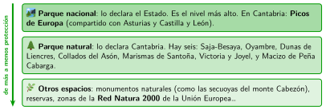

Parques nacionales y naturales
Criterios: PN 1.1, PN 4.2
🤔 Pienso5 min
Qué hago aquí: Piensa un momento y contesta con lo que ya sabes. No pasa nada si no lo sabes: es para empezar.
Imagina que tu playa o tu monte favorito se llenara de casas, carreteras y basura. ¿Qué se perdería? ¿Quién debería impedirlo?
📖 Leo y aprendo15 min
Qué hago aquí: Lee despacio, mira los dibujos y los ejemplos, y quédate con la idea clave del final.
Un espacio natural protegido es un lugar con paisajes, plantas, animales o rocas tan valiosos que una ley lo protege. En él hay normas: qué se puede construir, dónde se puede caminar, acampar o pescar. El objetivo es conservarlo y que, a la vez, la gente pueda conocerlo y disfrutarlo.

Cada espacio tiene un plan que dice qué usos están permitidos y cuáles no, guardas que vigilan y centros de interpretación que explican sus valores a los visitantes. En muchos de ellos viven personas: los vecinos siguen con su ganadería, su pesca o su turismo, de forma compatible con la conservación.
✏️ Hago25 min
Qué hago aquí: Haz las actividades en orden. Empieza siempre por las básicas.
Une cada figura de protección con lo que la define. Después escribe un ejemplo de Cantabria de cada una.
Elige la pareja de cada uno.
Explica las tres herramientas que tiene un espacio protegido (plan, guardas y centro de interpretación) y para qué sirve cada una.
Un mismo lugar puede ser a la vez parque natural, ZEC y ZEPA. ¿Por qué crees que se superponen varias figuras? ¿Qué añade cada una?
La Red Natura 2000 ocupa más de una cuarta parte de Cantabria. Calcula cuántos km² son, como mínimo (Cantabria tiene unos 5300 km²). ¿Qué consecuencias tiene para la economía de los municipios afectados?
Una vecina de un pueblo dentro de un parque dice: «Desde que es parque no nos dejan hacer nada». Un turista dice: «Gracias al parque esto sigue siendo bonito». Escribe un diálogo de seis intervenciones en el que los dos expongan argumentos.
Explica la diferencia entre conservar y congelar un paisaje. ¿Por qué la ganadería tradicional puede ser necesaria para conservar un espacio protegido?
Busca en el mapa de espacios protegidos de Cantabria el más cercano a tu colegio. Indica su figura, qué protege y una norma que tenga.
🚀 Amplío (si quieres saber más)
Qué hago aquí: ¿Has terminado? Lee la curiosidad o elige el reto. Es voluntario.
Investiga qué es una reserva de la biosfera y en qué se diferencia de un parque. Compara las dos reservas de Cantabria (Picos de Europa y Nansa-Peñarrubia con Tudanca) en una tabla: superficie, municipios, actividades humanas y valores protegidos.
✅ Compruebo5 min
Qué hago aquí: Contesta sin mirar la ficha y marca cómo lo llevas.